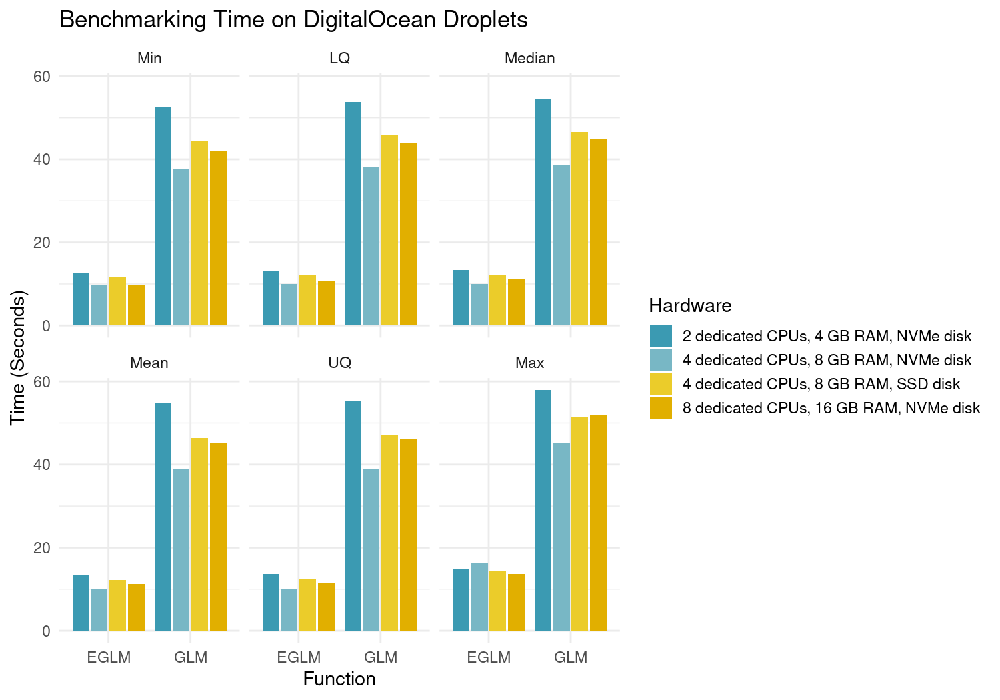

Description
Efficient Fitting of Linear and Generalized Linear Models by using just base R. As an alternative to lm() and glm(), this package provides elm() and eglm(), with a significant speedup when the number of observations is larger than the number of parameters to estimate. The speed gains are obtained by reducing the NxP model matrix to a PxP matrix, and the best computational performance is obtained when R is linked against OpenBLAS, Intel MKL or other optimized BLAS library. This implementation aims at being compatible with ‘broom’ and ‘sandwich’ packages for summary statistics and clustering by providing S3 methods.
Details
This package takes ideas from glm2, speedglm, fastglm, and fixest, but the implementations here shall keep the functions and outputs as closely as possible to the stats package, therefore making this compatible with packages such as sandwich for robust estimation, even if that means to attenuate the speed gains.
The ultimate aim of the project is to produce a package that:
- Does exactly the same as lm and glm in less time
- Is equally numerically stable as lm and glm
- Depends only on base R, with no Rcpp or other calls
- Uses R’s internal C code such as the
Cdqrlsfunction that the stats package uses for model fitting - Can be used in Shiny dashboard and contexts where you need fast model fitting
- Is useful for memory consuming models
- Allows model fitting with limited hardware
Minimal working example
Stats (base) package
formula <- "mpg ~ I(wt^2)"
summary(glm(formula, data = mtcars))
#>
#> Call:
#> glm(formula = formula, data = mtcars)
#>
#> Deviance Residuals:
#> Min 1Q Median 3Q Max
#> -5.1583 -2.3882 -0.9648 1.8254 8.2256
#>
#> Coefficients:
#> Estimate Std. Error t value Pr(>|t|)
#> (Intercept) 28.05106 1.26324 22.21 < 2e-16 ***
#> I(wt^2) -0.70583 0.09616 -7.34 3.56e-08 ***
#> ---
#> Signif. codes: 0 '***' 0.001 '**' 0.01 '*' 0.05 '.' 0.1 ' ' 1
#>
#> (Dispersion parameter for gaussian family taken to be 13.42544)
#>
#> Null deviance: 1126.05 on 31 degrees of freedom
#> Residual deviance: 402.76 on 30 degrees of freedom
#> AIC: 177.86
#>
#> Number of Fisher Scoring iterations: 2Eflm package
library(eflm)
summary(eglm(formula, data = mtcars))
#>
#> Call:
#> eglm(formula = formula, data = mtcars)
#>
#> Deviance residuals:
#> Min 1Q Median 3Q Max
#> -5.1583 -2.3882 -0.9648 1.8254 8.2256
#>
#> Coefficients:
#> Estimate Std. Error t value Pr(>|t|)
#> (Intercept) 28.0511 1.26324 22.21 3.548e-20 ***
#> I(wt^2) -0.7058 0.09616 -7.34 3.556e-08 ***
#> ---
#> Signif. codes: 0 '***' 0.001 '**' 0.01 '*' 0.05 '.' 0.1 ' ' 1
#>
#> (Dispersion parameter for gaussian family taken to be 13.42544)
#>
#> Null deviance: 1126.05 on 31 degrees of freedom
#> Residual deviance: 402.76 on 30 degrees of freedom
#> AIC: 177.86
#>
#> Number of Fisher Scoring iterations: 1Installation
You can install the released version of eflm from CRAN with:
install.packages("eflm")And the development version with:
remotes::install_github("pachamaltese/eflm")Benchmarks
I fitted computationally complex model from Yotov, et. al. (2016).
The benchmark was be the model:
trade ~ log_dist + cntg + lang + clny + exp_year + imp_yearThe variables are:
- trade: bilateral trade
- log_dist: log of distance
- cntg: contiguity
- lang: common language
- clny: colonial relation
- exp_year/imp_year: exporter/importer time fixed effects
The data for this model consists in a 28,152 x 7 data frame with 5 numeric and 2 categorical columns. This results in a 28,152 x 23 design matrix:
#> # A tibble: 28,152 x 23
#> # Groups: importer, year [414]
#> exporter importer pair_id year trade dist cntg lang clny log_trade
#> <chr> <chr> <int> <int> <dbl> <dbl> <int> <int> <int> <dbl>
#> 1 ARG AUS 1 1986 27.8 12045. 0 0 0 3.32
#> 2 ARG AUT 2 1986 3.56 11751. 0 0 0 1.27
#> 3 ARG BEL 4 1986 96.1 11305. 0 0 0 4.57
#> 4 ARG BGR 3 1986 3.13 12116. 0 0 0 1.14
#> 5 ARG BOL 6 1986 52.7 1866. 1 1 0 3.97
#> 6 ARG BRA 8 1986 405. 2392. 1 0 0 6.00
#> 7 ARG CAN 10 1986 48.3 9391. 0 0 0 3.88
#> 8 ARG CHE 12 1986 23.6 11233. 0 0 0 3.16
#> 9 ARG CHL 14 1986 109. 1157. 1 1 0 4.69
#> 10 ARG CHN 17 1986 161. 19110. 0 0 0 5.08
#> # … with 28,142 more rows, and 13 more variables: log_dist <dbl>, y <dbl>,
#> # log_y <dbl>, e <dbl>, log_e <dbl>, total_e <dbl>, remoteness_exp <dbl>,
#> # log_remoteness_exp <dbl>, total_y <dbl>, remoteness_imp <dbl>,
#> # log_remoteness_imp <dbl>, exp_year <chr>, imp_year <chr>The benchmark was conducted by using the microbenchmark package and running the code in different Digital Ocean droplets:
benchmark_times <- microbenchmark(
glm(trade ~ log_dist + cntg + lang + clny + exp_year + imp_year,
family = quasipoisson(link = "log"),
data = ch1_application1_2,
y = FALSE,
model = FALSE
),
eglm(trade ~ log_dist + cntg + lang + clny + exp_year + imp_year,
family = quasipoisson(link = "log"),
data = ch1_application1_2,
y = FALSE,
model = FALSE
),
times = 500L
)Here are the tests results which are very consistent across different hardware (this is surprising, more CPUs don’t reduce the median time). Also notice that this plot summarises 2,000 repetitions of the tests: 